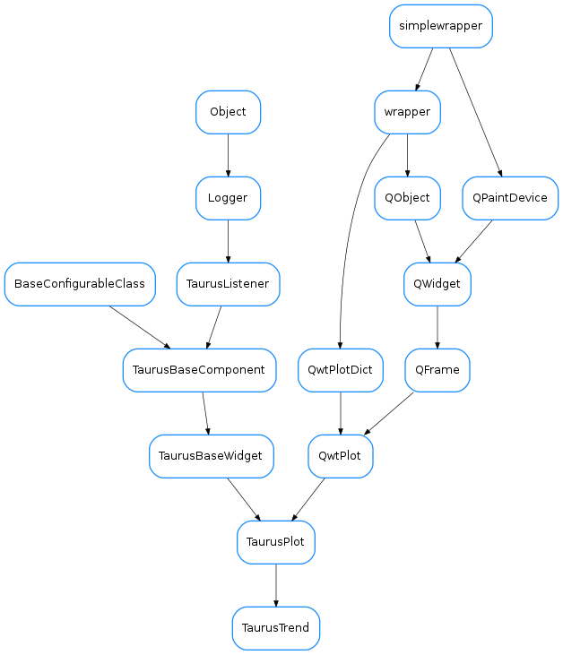

TaurusTrend¶

-
class
TaurusTrend(parent=None, designMode=False)[source]¶ Bases:
taurus.qt.qtgui.plot.taurusplot.TaurusPlotA
TaurusPlot-derived widget specialised in plotting trends (i.e., evolution of parameters).
TaurusTrend inherits all the features from TaurusPlot (zooming, exporting/importing, data inspection,...) and also provides some specific features (e.g. fixed-range X scale mode and Archiving support).
For an overview of the features from an user point of view, see the TaurusTrend User’s Interface Guide.
You can also see some code that exemplifies the use of TaurusTrend in the TaurusTrend coding examples
Note: if you pass a model that is a 1D attribute (instead of a scalar), TaurusTrend will interpret it as a collection of scalar values and will plot a separate trend line for each.
Note 2: As an special case, you can pass a model of the type scan://doorname. This will link the TaurusTrend to the given Taurus door and will listen to it for scan record events, which will be plotted.
-
DEFAULT_MAX_BUFFER_SIZE= 65536¶
-
applyConfig(configdict, **kwargs)[source]¶ applies the settings stored in a configdict to the current plot.
Parameters: configdict ( dict) –See also
-
changeCurvesTitlesDialog(curveNamesList=None)[source]¶ Shows a dialog to set the curves titles (it will change the current curves titles and the default curves titles)
Parameters: curveNamesList ( string_sequenceorstring_iterator) – names of the curves to which the title will be changed (if None given , it will apply to all the TrendsSets and it will also be used as default for newly created ones)Return type: caselessDict<str,QString> orNoneReturns: The return value will be None if curveNamesList is None. Otherwise it will be a dictionary with key=curvename and value=newtitle. See also
setCurvesTitle(),setDefaultCurvesTitle()
-
clearBuffers()[source]¶ clears the buffers of existing trend sets (note that this does not remove the models, it simply removes all stored data)
-
clearScan(scanname)[source]¶ resets the curves associated to the given scan
Parameters: scanname ( str) – the scan model name (e.g. “scan://a/b/c”)
-
createConfig(tsnames=None, **kwargs)[source]¶ Returns a pickable dictionary containing all relevant information about the current plot. For Taurus attributes it stores the attribute name and the curve properties For raw data curves, it stores the data as well.
Hint: The following code allows you to serialize the configuration dictionary as a string (which you can store as a QSetting, or as a Taurus Attribute):
import pickle c = pickle.dumps(taurusplot.createConfig()) #c is a string that can be stored
Parameters: names ( sequence<str>) – a sequence of TrendSet names for which the configuration will be stored (all by default).Return type: dictReturns: configurations (which can be loaded with applyConfig)
-
curveDataChanged(name)[source]¶ slot that is called whenever a curve emits a dataChanged signal
Emits: “dataChanged(const QString &)” Parameters: name ( str) – curve name
-
dataChanged¶
-
forcedReadingPeriod¶ returns the forced reading period for the given trend (or the general period if None is given)
Parameters: tsetname ( strorNone) – name of the trend set for which the forced reading should be returned. If None passed, the default period for all curves is returned
-
getCurveTitle(name, index=None)[source]¶ reimplemented from
TaurusPlot. Returns the title of a curve from a trendsetParameters: - name (
str) – The name of the trendset. If the name is not a known trendset name and index is None, we will try with tsetname and index obtained from parsing the given name (assuming the format ‘<tsetname>[<index>]’). - index (
intorNone) – the index of the curve in the trend set. If None is passed, it returns the base title of the trendset
Return type: Returns: the title
- name (
-
getForcedReadingPeriod(tsetname=None)[source]¶ returns the forced reading period for the given trend (or the general period if None is given)
Parameters: tsetname ( strorNone) – name of the trend set for which the forced reading should be returned. If None passed, the default period for all curves is returned
-
getMaxDataBufferSize()[source]¶ returns the maximum number of events that can be plotted in the trend
Return type: intReturns:
-
classmethod
getQtDesignerPluginInfo()[source]¶ Returns pertinent information in order to be able to build a valid QtDesigner widget plugin
Return type: dictReturns: a map with pertinent designer information
-
getTrendSet(name)[source]¶ gets a trend set object by name.
Important: Note that the TrendSet object is not thread safe. Therefore, if you access it you must do it protected by the TaurusTrend.curves_lock reentrant lock.
Parameters: name ( str) – the trend set nameReturn type: TaurusTrendSetReturns: the trend set object corresponding to name
-
getTrendSetNames()[source]¶ returns the names of all TrendSets attached to this TaurusTrend.
Return type: list<str>Returns: a copy of self.trendSets.keys()
-
getUseArchiving()[source]¶ whether TaurusTrend is looking for data in the archiver when needed
Return type: boolReturns: See also
-
getUsePollingBuffer()[source]¶ whether TaurusTrend is looking for data in the PollingBuffer
Return type: boolReturns: See also
-
hideEvent(event)[source]¶ reimplemented from
TaurusPlot.showEvent()so that the replot timer is active only when needed
-
isTimerNeeded(checkMinimized=True)[source]¶ checks if it makes sense to activate the replot timer. The following conditions must be met:
- the replot timer must exist
- the area of the plot must be non-zero
- at least one trendset must be attached
- the plot should be visible
- the plot should not be minimized (unless checkMinimized=False)
Parameters: checkMinimized ( bool) – whether to include the check of minimized (True by default)Return type: boolReturns:
-
maxDataBufferSize¶ returns the maximum number of events that can be plotted in the trend
Return type: intReturns:
-
rescheduleReplot(axis=2, width=1080)[source]¶ calculates the replotting frequency based on the time axis range. It assumes that it is unnecessary to replot with a period less than the time per pixel.
Parameters: - axis (
Axis) – the axis to which it should associate - width (
int) – the approx canvas width (in pixels). The exact value could be obtained from the widget, but an order of magnitude approximation is usually ok (and cheaper). The default value is 1080 (HD ready!)
- axis (
-
resizeEvent(event)[source]¶ reimplemented from
TaurusPlot.resizeEvent()so that the replot timer is active only when needed
-
setEventFilters(filters=None, tsetnames=None, preqt=False)[source]¶ propagates a list of taurus filters to the trendsets given by tsetnames. See
TaurusBaseComponent.setEventFilters()
-
setForcedReadingPeriod(msec=None, tsetnames=None)[source]¶ Sets the forced reading period for the trend sets given by tsetnames.
Parameters:
-
setMaxDataBufferSize(maxSize=None)[source]¶ sets the maximum number of events that can be plotted in the trends
Parameters: maxSize ( intorNone) – the maximum limit. If None is passed, the user is prompted for a value.See also
TaurusTrendSet.setMaxDataBufferSize()
-
setPaused(paused=True)[source]¶ Pauses itself and other listeners (e.g. the trendsets) depending on it
See also
TaurusBaseComponent.setPaused()
-
setScanDoor(qdoorname)[source]¶ sets the door to which TaurusTrend will listen for scans. This removes any previous scan set using this method, but respects scans set with setModel
-
setScansAutoClear(enable)[source]¶ sets whether the trend sets associated to scans should be reset every time a data_desc packet is received from the door.
Parameters: enable ( bool) –See also
-
setScansUsePointNumber(enable)[source]¶ Note
This method is deprecated. Please use
setScansXDataKey()insteadsets whether the trend sets associated to scans should use the point number from the data record for the abscissas (default).
Parameters: enable ( bool) –
-
setScansXDataKey(key, scanname=None)[source]¶ selects the source for the data to be used as abscissas in the scan plot.
Parameters: See also
the constructor of
ScanTrendsSet
-
setScrollStep(scrollStep)[source]¶ Sets the scroll step when in Dynamic X mode. This is used to avoid excessive replotting, which may be a problem when plotting a lot of points.
Parameters: scrollStep ( float) – portion of the current range that will be added when scrolling. For example, 0.1 means that 10% of the current range will be added when scrolling. A value of 0 means that no extra space will be added (thus the scroll is not in “steps”). Large scroll steps mean rough scrolls, but also less CPU usage.See also
setXDynScale()
-
setTrendSetsTitles(basetitle, setNames=None)[source]¶ Calls setTitleText(basetitle) for each Trend Set set in setNames
Parameters: See: TaurusTrendsSet.setTitleText
-
setUseArchiving(enable)[source]¶ enables/disables looking up in the archiver for data stored before the Trend was started
Parameters: enable ( bool) – if True, archiving values will be used if available
-
setUsePollingBuffer(enable)[source]¶ enables/disables looking up in the PollingBuffer for data
Parameters: enable ( bool) – if True, PollingBuffer values will be used if available
-
setXIsTime(enable, axis=2)[source]¶ Reimplemented from
TaurusPlot.setXIsTime()
-
showArchivingWarning()[source]¶ shows a dialog warning of the potential isuues with archiving performance. It offers the user to disable archiving retrieval
-
showEvent(event)[source]¶ reimplemented from
TaurusPlot.showEvent()so that the replot timer is active only when needed
-
updateCurves(names)[source]¶ Defines the curves that need to be plotted. For a TaurusTrend, the models can refer to:
- scalar data: they are to be plotted in a trend
- on-dimensional data: each element of the spectrum is considered independently
Note that passing an attribute for X values makes no sense in this case
Internally, every curve is grouped in a TaurusTrendSet. For each SPECTRUM attribute, a TrendSet is created, containing as many curves as the lenght of the spectrum For eacha SCALAR attribute, a TrendSet containing just one curve is created.
Parameters: names ( sequence<str>) – a sequence of model namesNote
Adding/removing a model will add/remove a whole set. No sub-set adding/removing is allowed. Still, each curve will be independent regarding its properties, and can be hidden/shown independently.
See also
-
useArchiving¶ whether TaurusTrend is looking for data in the archiver when needed
Return type: boolReturns: See also
-